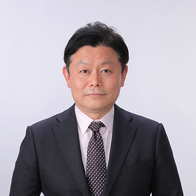

お客様から信頼される企業を目指します！
株式会社テクニカルは、1991年に創業し、おかげさまで30周年を迎えました。
弊社は、建築全般（新築、改修工事）、外壁塗装、解体工事、ビルメンテナンス、ハウスクリーニング、お墓の清掃作業など、多岐にわたり事業を展開しております。
また、毎年GW中に広島市内で開催されるフラワーフェスティバルのシンボルである「花の塔」を、第1回目～現在に至る全て施工させていただいております。
昨年はコロナの影響で世の中の生活様式が一変しました。
県内外にお住いの方々から、ご先祖様のお墓清掃のご依頼をたくさんいただきました。
心より感謝申し上げます。
これからもお客様のニーズに応え、お客様から信頼される企業を目指してまいります。

株式会社 テクニカル
代表取締役 出田 旬
| 商号 | 株式会社テクニカル |
|---|---|
| 代表取締役 | 出田 旬 |
| 事業内容 |
|
| 許可 | 特定建設業、広島県知事許可(特-2)第３９３７６号 |
| 所在地 | 〒730-0854 広島市中区土橋町6-33 TEL(082)294-2400 FAX(082)234-1182 |
| 創業 | 平成3年11月 |
| 資本金 | ２，０００万円 |
| 取引銀行 | 愛媛銀行 広島銀行 中国銀行 伊予銀行 |
| 主要取引先 | (株)中国新聞社 (株)ワイテック JA厚生連 全農ひろしま 大和証券(株)広島支店 学校法人上野学園 (株)中国新聞サービスセンター (株)中国新聞販売センター 中国新聞ビル管理(株) 中国印刷(株) (株)中国新聞情報文化センター (株)中国新聞文化事業社 ㈲中国文化企画センター 鹿島建設(株) 合田産業（株） 広島ガスライフ（株） ㈶広島観光コンベンションビューロー 知的障害者施設中国芸南学園 特別老人ホーム竹原市黒滝ホーム |
| 特許 |
|